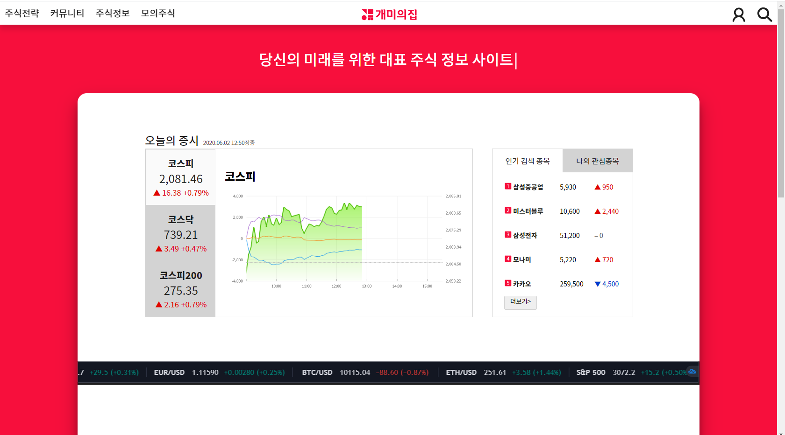

Intro
눈에 보이는 프론트단에 관심이 많지만 저의 경험과 잠재력을 넓히기위해 지난 8개월동안 대덕인재개발원에서 풀스택 과정을 수료하였습니다.
프론트앤드개발자로서 부족한 부분은 독학하여 flex그리드, 동적 애니메이션, 미디어쿼리를 통한 반응형 UI등을 최종프로젝트에 반영하였습니다.
우물안 개구리가 아닌 우물밖 개구리가 되어 항상 배우며 성장하고 싶습니다.
Middle Projects
Final Project

개미의 집
Java, Spring, Html, CSS, JavaScript
UA로써 부트스트랩 없이 HTML, CSS, Java Script로 웹 애플리케이션을 만들고 싶은 욕심이 생겼고 기다리는 팀원들이 편의를 생각해 혼자서 한달안에 메인 디자인과 모든 UI 페이지들을 빨리 마무리해야 된다는 스트레스와 압박감이 상당하였습니다. 이점을 팀원들에게 솔직하게 터놓게 되었고 혼자 하려 했던 부담을 내려놓아 몇 개의 UI가 간단한 페이지는 팀원들에게 분담하고 함께 브랜딩을 정하되 UI가 계속 바뀌는 상황이기 때문에 메인을 마칠 때까지만 CSS를 UA만 건드는 것으로 양해를 구하였습니다. 이로써 더욱더 서로를 믿고 돈독해지는 계기가 되었고 커뮤니케이션의 중요성을 깨달았습니다.
2020.1.20 ~ 2020.2.13